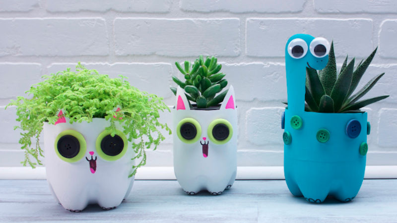
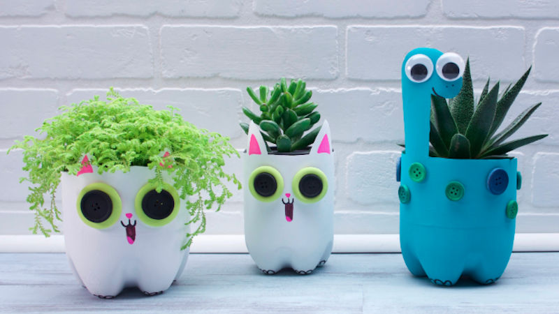

Activities

อ่านหนังสือ
ปกติผมมักจะใช้เวลาว่างในการอ่านหนังสือ ซึ่งประเภทหนังสือที่ผมอ่าน จะไม่ใช่หนังสือเรียน แต่จะเป็นหนังสือเกี่ยวกับการ์ตูน และจิตวิทยาทั่วไป แนวให้กำลังใจ หาคำตอบของชีวิตอะไรประมาณนี้ครับ
ผมรู้สึกว่าอ่านแล้วสนุกดี ใครที่ไม่ค่อยชอบอ่านหนังสือ ลองอ่านดูสัก 1-2 เล่มที่เป็นแนวให้กำลังใจ หรือหาคำตอบของตัวเองดูครับ ผมหวังว่าคุณจะติดใจ
เล่นเกม
การเล่นเกมสำหรับผมนั้น มันคล้ายกับเวลาพักผ่อนในแต่ละวันของผม เหมือนกับการใช้ชีวิตในโลกอีกใบหนึ่งของผมเลยก็ว่าได้
โดยแนวเกมที่ผมชอบ จะเป็นเกมแนว First Person Shooting หรือเรียกสั้นๆว่า FPS ที่เราจะยิงคู่ต่อสู้เพื่อผ่าน Mission หรือเป้าหมายในแต่ละครั้ง
เล่นดนตรี
ส่วนตัวแล้วผมเป็นคนที่ชอบเล่นดนตรีมาตั้งแต่สมัยเด็ก เพราะรู้สึกว่ามันสนุก และท้าทาย เครื่องดนตรีที่ผมเล่นเป็นประจำคือ กีตาร์ วันไหนว่างๆ ก็มักจะหาเพลงมาฝึกอยู่บ่อยๆ
และเครื่องดนตรีที่ชอบเล่นอื่นๆ ก็จะเป็นคีย์บอร์ด กลอง และเบสครับ แต่ว่าผมไม่มีเครื่องดนตรีเหล่านี้ เลยไม่ได้ฝึกเล่นประจำ
งานอดิเรกอื่น ๆ
 
